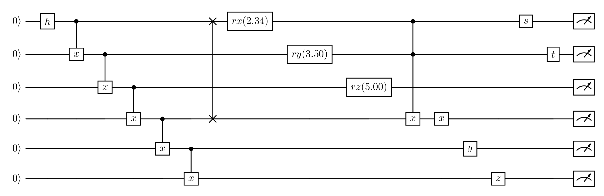
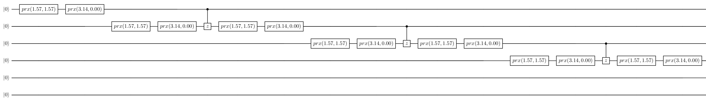
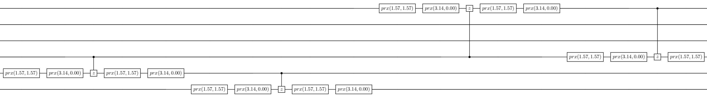
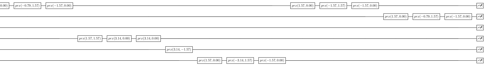

|
MLIR Passes v1.0
|
|
MLIR Passes v1.0
|
CudaQ offers also a transpiler infrastructure that is used by nvq++ quantum compiler. Transpilation can also be handled using MLIR passes as follows:
First, extract the MLIR context and define an MLIR PassManager as follows:
Next, define a BasisConversionPassOptions object and pass to it a list of gates to be considered as the native gate set. The transpiler will use the defined native gate set to try to apply decomposition passes. For instance, the following native gate set {"h", "s", "t", "rx", "ry", "rz", "x", "y", "z", "x(1)"} is specified.
Next, add a cudaq::opt::createBasisConversionPass to the pass manager. Do not forget to pass options as input parameter of cudaq::opt::createDecompositionPass, as follows:
Finally, you can dump and visualize the effects of the decomposition pattern on your MLIR module as follows:
The following circuit will be used as a test case. The following section shows the transpiled circuit for IQM.

The IQM backend supports the following gates: "phased_rx","z(1)". For the sake of clarity, just fragments of the transpiled circuit are shown.


